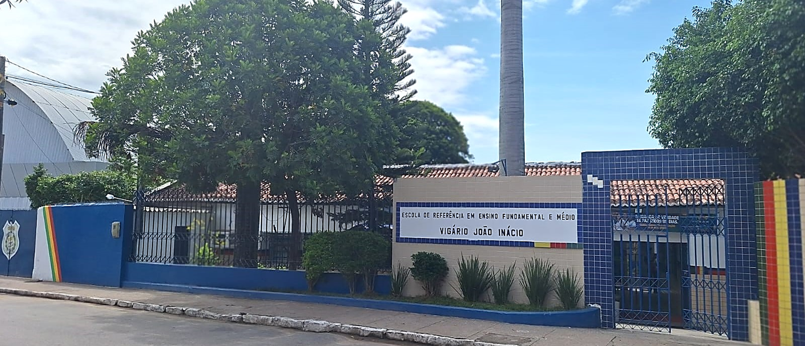

PROJETOS
Projetos pedagógicos
Atividades interdisciplinares, pesquisa, experimentação e iniciativas que conectam saberes.
EXPLORAR →Um espaço para celebrar o conhecimento, o protagonismo estudantil e as experiências que fazem da EREFEM Vigário João Inácio uma comunidade de aprendizagem.
Conheça os espaços dedicados às iniciativas pedagógicas, à criatividade e às conquistas dos nossos estudantes.
Atividades interdisciplinares, pesquisa, experimentação e iniciativas que conectam saberes.
EXPLORAR →Talentos, apresentações, produções e conquistas que merecem ser compartilhadas.
CONHECER →Datas especiais, atividades culturais e momentos que fortalecem a nossa comunidade escolar.
ACOMPANHAR →Os cartões são categorias de demonstração; notícias e fotografias reais serão incluídas pela equipe escolar.

Localizada em Buíque, Pernambuco, a EREFEM Vigário João Inácio é um espaço de construção coletiva do conhecimento. Nosso portal foi pensado para aproximar escola, estudantes, famílias e comunidade.
Com o lema “Educar e Construir”, valorizamos o desenvolvimento de projetos, a participação dos estudantes e a divulgação das atividades pedagógicas.
Em breve, este espaço reunirá avisos, datas importantes, calendários e comunicados oficiais para estudantes e famílias.
Uma galeria para registrar atividades, projetos e experiências da comunidade escolar.